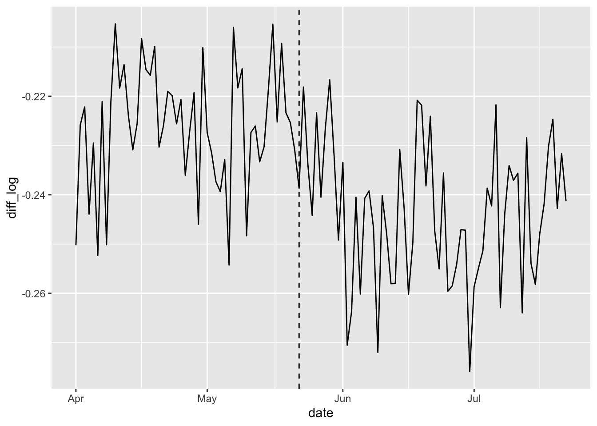
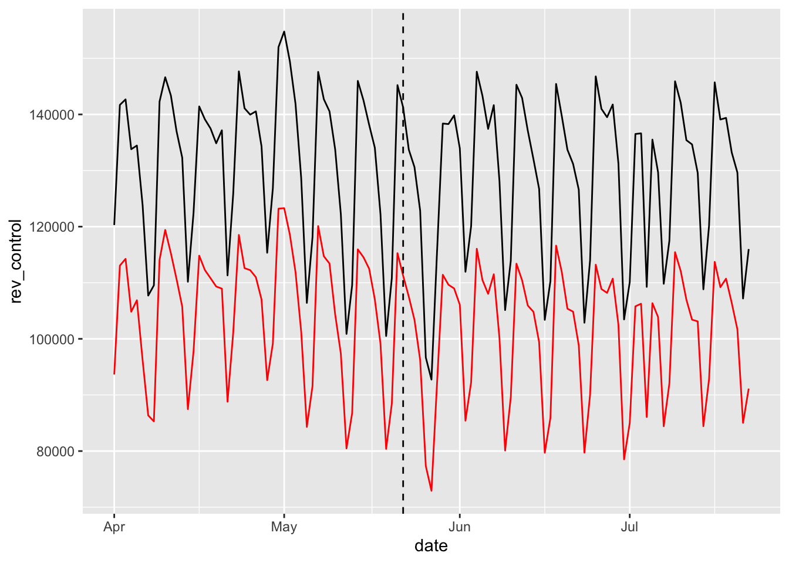
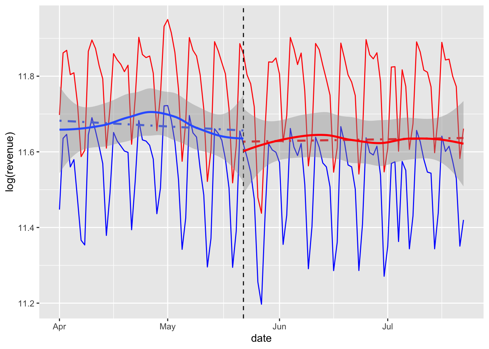

library(tidyverse)
library(lubridate)Sponsored or paid search refers to the advertisements and links that you see around web search results on, for example, Google.
eBay stopped bidding on any AdWords (the marketplace through which Google’s paid search is sold) for 65 of the 210 “designated markets” (DM) in the U.S. for the eight weeks following May 22, 2012. Google guesses the DM on a web browser and eBay can track users by their shipping address, allowing for DM-specific paid-search turnoff and response tracking.
Assume that nothing other than the eBay’s paid-search status changes eBay’s sales revenue across the DM after May 22, 2012.
The data set for Question 1 is imported by the following read_csv() function:
paidsearch <- read_csv(
'https://bcdanl.github.io/data/paidsearch.csv')dma: an identification number of a designated market
i (e.g., Boston, Los Angeles)treatment_period: 0 if date is before May 22, 2012 and
1 after.search_stays_on: 1 if the paid-search goes off in dma
i, 0 otherwise.revenue: eBay’s sales revenue for dma i
and date tSummarize the mean vale of revenue for each group of
search_stays_on and for each date.
Q1a <- paidsearch %>%
group_by(search_stays_on, date) %>%
summarise(revenue = mean(revenue))Calculate the log difference between mean revenues in each group of
search_stays_on. (This is the log of the average revenue in
group of search_stays_on == 1 minus the log of the average revenue in
group of search_stays_on == 0.)
# date the daily mean vale of `revenue` search_stays_on
# 1-Apr-12 93650.68 0
# 1-Apr-12 120277.57 1search_stays_on for date 1-Apr-12 is log(120277.57) -
log(93650.68).Q1b <- paidsearch %>%
mutate(date = dmy(date)) %>%
arrange(dma, date)
paidsearch_sum <- Q1b %>%
group_by(search_stays_on, date) %>%
summarise(revenue = mean(revenue))
paidsearch_sum2 <- paidsearch_sum %>%
arrange(date, search_stays_on) %>%
pivot_wider(names_from = "search_stays_on",
values_from = "revenue") %>%
rename(rev_control = `0`,
rev_treat = `1`) %>%
mutate(diff_log = log(rev_control) - log(rev_treat))
Describe the daily trend of the log of the daily mean revenue for
each group of search_stays_on before and after May 22, 2012
in one plot using lubridate and ggplot2.
Describe the daily trend of the log difference of daily mean
revenues between the two group of search_stays_on before
and after May 22, 2012 using lubridate and ggplot2.
Make a simple comment on your ggplot results.
ggplot(data = paidsearch_sum2) +
geom_line(aes(x = date, y = diff_log)) +
geom_vline(aes(xintercept=ymd("2012-May-22")),
color = "black", lty = 2)
ggplot(data = paidsearch_sum2) +
geom_line(aes(x = date, y = rev_control), color = 'red') +
geom_line(aes(x = date, y = rev_treat)) +
geom_vline(aes(xintercept=ymd("2012-May-22")),
color = "black", lty = 2)
ggplot() +
geom_line(data = filter(paidsearch_sum, search_stays_on == 0) ,
aes(x = date, y = log(revenue)), color = 'blue')+
geom_line(data = filter(paidsearch_sum, search_stays_on == 1) ,
aes(x = date, y = log(revenue)), color = 'red')+
geom_vline(aes(xintercept=ymd("2012-May-22")),
color = "black", lty = 2)+
geom_smooth(data = filter(paidsearch_sum,
date <= ymd("2012-May-22")),
aes(x = date, y = log(revenue)),
method = lm, lty = 4, se = F) +
geom_smooth(data = filter(paidsearch_sum,
date >= ymd("2012-May-22")),
aes(x = date, y = log(revenue)),
color = "red",
method = lm, lty = 4, se = F) +
geom_smooth(data = filter(paidsearch_sum,
date <= ymd("2012-May-22")),
aes(x = date, y = log(revenue))) +
geom_smooth(data = filter(paidsearch_sum,
date >= ymd("2012-May-22")),
aes(x = date, y = log(revenue)),
color = "red") 
For the rest of questions in Question 1, use the following data.frame:
paid_search <- read_csv(
'https://bcdanl.github.io/data/paid_search.csv')
paid_search$DM <- as.factor(paid_search$DM)
paid_search <- arrange(paid_search, DM, no_paid_search)paid_search, into training and testing data sets.DM: an identification number of a designated market i
(e.g., Boston, Los Angeles)May22_2012: 0 denotes before May 22 and May22_2012 = 1
after.no_paid_search: 1 if the paid-search goes off in DM,
no_paid_search = 0 otherwise.log_revenue: the log of eBay’s sales revenue for DM i
and time tConsider the following linear regression model.
dm_reg1 <- lm(log_revenue ~ no_paid_search * May22_2012,
data = paid_search )summary(dm_reg1) ##
## Call:
## lm(formula = log_revenue ~ no_paid_search * May22_2012, data = paid_search)
##
## Residuals:
## Min 1Q Median 3Q Max
## -3.8518 -0.7061 -0.0447 0.7696 3.6521
##
## Coefficients:
## Estimate Std. Error t value
## (Intercept) 10.948646 0.100495 108.948
## no_paid_search 0.014081 0.176603 0.080
## May22_2012 -0.039400 0.142121 -0.277
## no_paid_search:May22_2012 -0.006587 0.249754 -0.026
## Pr(>|t|)
## (Intercept) <2e-16 ***
## no_paid_search 0.936
## May22_2012 0.782
## no_paid_search:May22_2012 0.979
## ---
## Signif. codes: 0 '***' 0.001 '**' 0.01 '*' 0.05 '.' 0.1 ' ' 1
##
## Residual standard error: 1.198 on 416 degrees of freedom
## Multiple R-squared: 0.0003231, Adjusted R-squared: -0.006886
## F-statistic: 0.04482 on 3 and 416 DF, p-value: 0.9874Describe the model in Q1d in words.
On average, are the predictions correct in the model in Q1d? Are there systematic errors?
Describe the following model in words.
formula <- log_revenue ~ no_paid_search * May22_2012 + DMEstimate the following linear regression model.
dm_reg2 <- lm(log_revenue ~ no_paid_search * May22_2012 + DM,
data = paid_search )
stargazer::stargazer(dm_reg1, dm_reg2,
type = 'html',
omit = c("DM"))| Dependent variable: | ||
| log_revenue | ||
| (1) | (2) | |
| no_paid_search | 0.014 | -0.227*** |
| (0.177) | (0.027) | |
| May22_2012 | -0.039 | -0.039*** |
| (0.142) | (0.003) | |
| no_paid_search:May22_2012 | -0.007 | -0.007 |
| (0.250) | (0.006) | |
| Constant | 10.949*** | 11.453*** |
| (0.100) | (0.019) | |
| Observations | 420 | 420 |
| R2 | 0.0003 | 1.000 |
| Adjusted R2 | -0.007 | 0.999 |
| Residual Std. Error | 1.198 (df = 416) | 0.027 (df = 208) |
| F Statistic | 0.045 (df = 3; 416) | 3,961.530*** (df = 211; 208) |
| Note: | p<0.1; p<0.05; p<0.01 | |
no_paid_search
May22_2012
no_paid_search:May22_2012
On average, are the predictions correct in the model in Q1h? Are there systematic errors?
What would happen to sales revenue if eBay stopped paying for search advertising? Would eBay’s search advertising worth the cost?